Across the border
I can't believe that this one month bike trip in Kazakhstan got me sleepless.
I rolled on the bed and finally fall at sleep when the sun is about to rise.
It feels like at the moment I fall at sleep, the alarm of my watch starts beeping.
I totally want to stay in bed for some more time, but it will not be possible today.
After using the bathroom, I take my bags and Dido downstairs. Since I have all my bags packed before I sleep, this doesn't take much time.
I took off with the greeting from the owner of the hotel, under the morning sunshine at half pass six.

In half an hour I rode 7 kilometers on Dido, and arrived at Huoerguosi.
As usual, all the trucks are still waiting in the long line at the "national gate",
which is the nickname of the border gate from the locals. However, unlike my previous visits,the border gate will open today.
Therefore the gate is crowded with people.
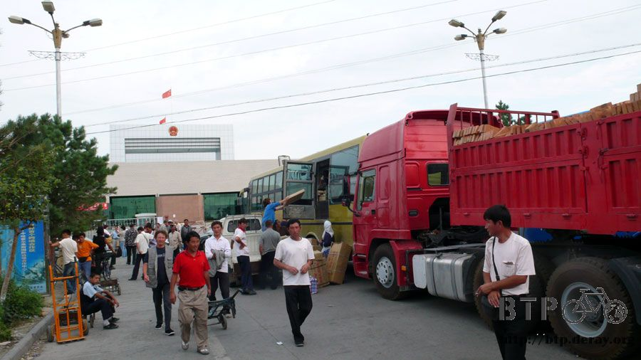
All kind of people surrounds me right after I stopped with Dido.
That includes currency exchange guy, begging old lady, chatter box and the bell boys.
Currency exchange is indeed an important thing to do now. I changed all the RMB into Tenge, the currency in Kazakhstan.
Since the currency exchange rate between RMB and Tenge is 100 to 1500, the 800 RMB in my wallet suddenly become 12000 Tenge.
However, these money is no where near enough in Kazakhstan. 800 RMB can keep me biking in China for more than half a month,
but I don't know if these Tenge can keep me living in Kazakhstan for three days?

I have only 7 dollar of RMB left with me after the currency exchange.
One dollar for the begging old lady, and the rest of it become my breakfast at the breakfast stand.
4 dollar for juice flavored milk and 2 dollars for the fruit stand.
The owner of the fruit stand originally says that 2 dollars is only good for one banana, but gave in after some "discussion".
I left the stall with two big bananas in hand.
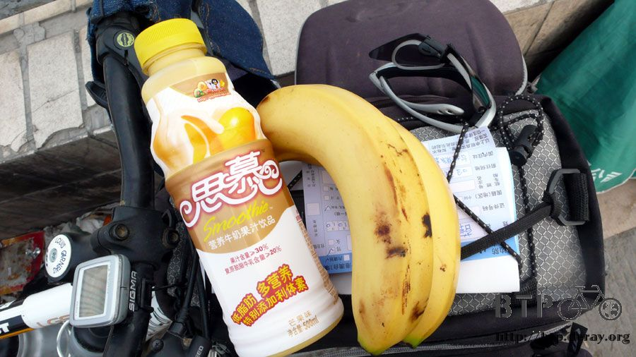
With the fruit and the milk, my breakfast looks good to me.
I spend all my RMBs on my breakfast, disregarding if I will need any RMB or not when I pass through the custom.

Just when I was about to start my breakfast, another begging old lady comes by and asked for money.
I said that I have no RMB left now; the banana is my best offer.
Out of my imagination, she really took one banana with her.
It kills me that part of my breakfast just ran away. I sped up consuming my banana, or I might end up with nothing to eat.
After I drank all the juice, another begging old lady came by.
I really have no money with now.. don't ask for money anymore..
Now I don't event have banana for you, if you really want it, take my pity empty juice bottle.
The lady really took the bottle.
At this rate, if I kept staying here, everything on me might be taken away by the army of beggars.
The custom is divided into two parts, one for the vehicles and one for the tourists.
There are a lot of international buses passing this border.
But to do that, all of the passengers and all the baggage need to get off the bus and pass through security check.
Then get back on the bus again. This is a gigantic job.
The number of baggage and passenger is so high that the scene is almost identical to refugees seeking for shelter.
This makes a good business for all the bell boys.
Without the trailer and the bossing yelling of the bellboys, these baggage can't even make it to the border.
The considerate bell boys even wrap your baggage with tapes.
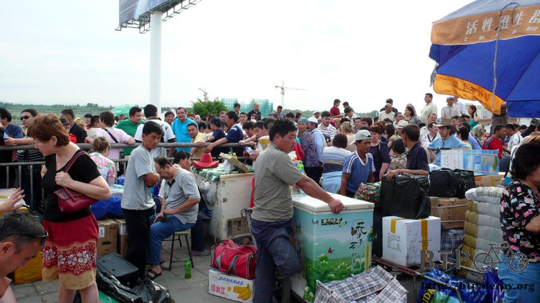
The long line at the tourist pass way consists of people from every nationalities and races and creates a magnificent view.
I was planning to get in line to pass the border earlier, but the owner of the juice milk stand informs me that getting in line means nothing.
The chaos will begin at the second the gate opens. People will start cut in the line, push their way,
jump across the fence, throw their baggage and do what ever they can to get to the border sooner.
He said that the best way to do it is sit here and rest, standing in the line will do you no good but getting you tired.
I took his word and lean by Dido at the fence of the shopping area.
The custom staffs arrived in the car at half pass seven, and the border gate delays its open time for half an hour, opens at half pass eight.
The good thing is that the weather is not too hot. Compared to the previous days, today is much cooler.
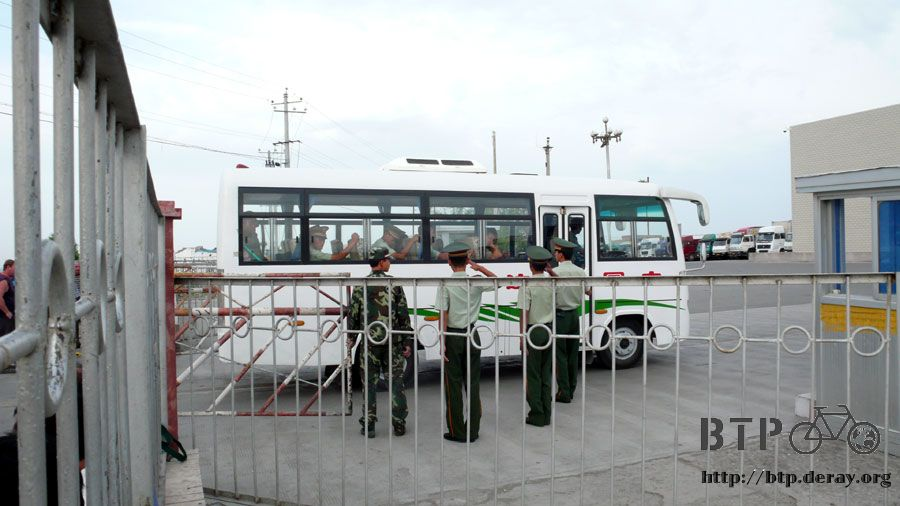
Birds of a feather flock together. Travelers who shares similar characteristics tend to chat a little when they are waiting at the fence.
This is where I met Jens, a backpacker with a big backpack from Denmark.
He has been touring for four months, starting from Europe, passing Russia, Inner Mongolia, China and Tibet, now on his way to Kazakhstan.
Unlike most of the backpackers who travels for fun,
Jens tries to extend his professional as herbal pharmacist and studies the plants and herbs all along the way.
Despite the fact that he is a teacher in Denmark and looks a few years elder than me, he is only 24 now!
Do Europeans mature earlier?
Actually, Jens is only trying his luck today. The valid date of his visa starts tomorrow,
but he want to try his luck and see if the customs let him in one day early or not.
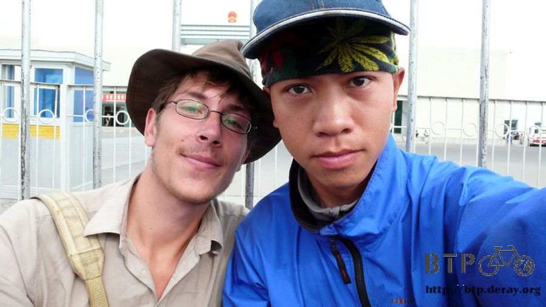
The gate opens promptly at eight thirty. Just like the owner of the fruit stand says, a chaos is the only word to describe the scene.
Those who stays near the fence throws the baggage into the line and jump across the fence, successfully cut in to the front of the line.
The bell boys piled the baggage on their trailer, yelling and pushes their way into the line with his customers follows him.
You can hear all different languages saying "stop pushing" or swearing in their own way.
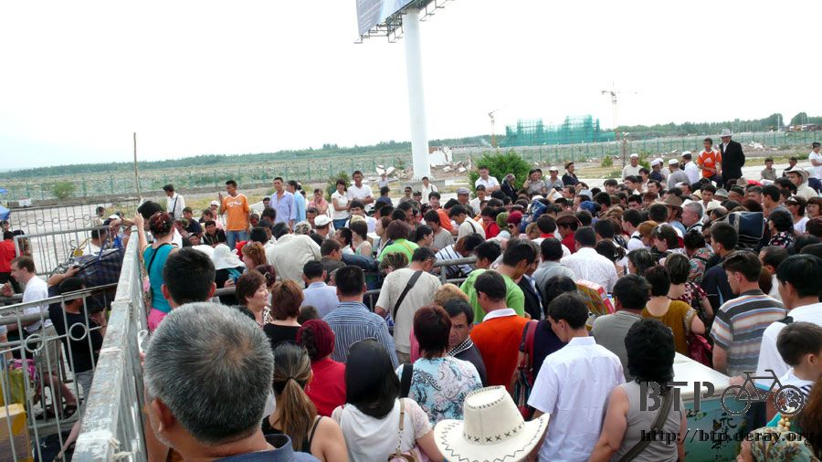
Quite a magnificent view. This is how we cross the border.
Jens laughs and say that this is nothing. The border of the Russia is full of shit,
the border to China from the Inner Mongolia you see everyone fighting with each other
and all the jeeps that supposed to carry the passengers ran into each other.
I walked Dido through the small gate after the swarm of people became slimmer. This is still my first step through the border.
Soon I got into the immigration hall, which sorts the passengers into Chinese and foreigners.
This is the second time for all the passengers to line up, almost all of the people who preformed the crazy refuge act are at the Chinese side.
The foreigner side is so empty that it looks likes the path for the privileged people.
The custom staff saw me and Dido and tells us to pass first.
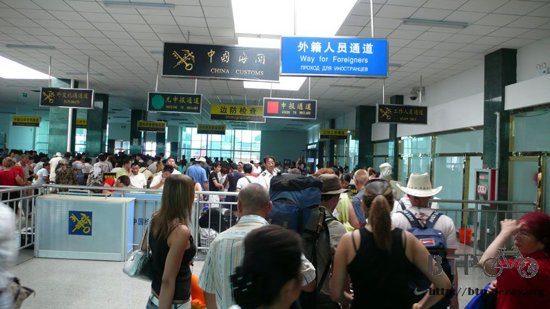
No baggage check, no anything. They admit me across the border before checking my ID.
Now that I have a stamp says " Departure at Huoerguosi, 2007,06,25" on my Taiwan Compatriot Pass
By the way, although the written rules in the customs all across the globe may reads different, but most of they forbids taking photo in the custom area.
If you were found taking photo at Russia custom, you might go into jail.
So try not to take this bad example into account and take photo of custom along the way.
After the border, another line starts. To get into Kazakhstan we need to cross the 500 meter wide border.
Walking and biking is forbidden on this part of road, and the only way to cross it is taking the shuttle bus.
This 500 meter costs 20 RMBs, and on top of that the government of Kazakhstan wants a passing fee for 300 Tengo as a tip.

The buses depart one by one. Since getting Dido onto the bus is not an easy job, I tried to get on the bus without success for many times.
Finally Jens managed to help me to get in a small bus when he passes through the border.
Hidden inside the huge pile of baggage, I felt totally chaos and extremely happy.
The others cheers for me when they saw me finally got in the bus.
Since I got no more RMB with me, Jens pays the fee for shuttle bus.
In return I paid the border fee for Jens with Tenge and call it even.
It costs 20 RMB for merely 500 meters. Some sophisticated travelers says
"Dame! This is as expensive as the cab in Hong Kong!"

After the short ride on the bus, it's time to get off. People start passing the pile of baggage down the bus.
Dido and I can only wait on the bus before they finish.
I am kind of worried if Dido is fine sitting in the pile.
A quick check up after I got off reveals that nothing is wrong besides a slightly bent fixture frame of the mud flap.
I simply bent it back to fix the problem.
Now that I am already departed from China, but still not yet arrived in Kazakhstan.
Time to get in yet another line with Dido, waiting for the paper work and immigration check up.
The embarkation form is in Kazakh. The English translation in some of the fields is missing, and I don't have any clue on how to fill it.
Glad that some custom officers help me out on that.
Baggage check comes after the passport check.
One by one, the baggage are loaded onto the X-ray machine, and people waited in line for body check.

A kid in the line smirks and asks me
"How the hell are you going to put your bike and the bags into that X-ray machine?"
I look at him, forced a smile and told him
"Good question. I just thought of exactly the same question."
The question became clear when it was my turn to load the baggage.
The security check staff waved and tell me to come over, asked me for my passport. He scribbled something on the form.
Then?
I am all clear to go!
No baggage checkup, no body check. In both custom of China or Kazakhstan, everyone treats me and Dido nice and easy.
Step out of the custom building, finally I am on the land of Kazakhstan.
This is also the footnote of the first adventure of border crossing in my life.
Other travelers are now waiting outside the custom building, until their bus cleared custom checkup.
I walk Dido to the road, and then kick my pedal to hit the road to Kazakhstan.
I took this photo before I left the border.
Next time, the border crossing will be at the border that is full of shit – border to Russia as described by Jens.

I originally assumed that the border town will be pretty crowded on the both side of border,
since there is Huoerguosi at the China side of the border. Now how about the Kazakhstan side?
Not even a ghost. The only living creature I see besides human is the crows. Their noisy sounds only implies bad luck.
Besides the hundred meter long lines of trucks awaiting to cross the border,
no village, no shops, no restaurants, no hotels.

Another significant difference that I noticed after I crossed the border is the landscape.
It's just a few kilometers away, how could the landscape changed so much?
Nothing seems humanly in where I can see. Unlike the deadly silence in Gobi Desert, the land of Kazakhstan is green and lively.
However, it is also extremely desolated.
It seems like the population of Kazakhstan is too little and the land is too large.
With no manpower to develop the land, the wild grassland is everywhere.
The animal industry is also much smaller here. I can barely see any cattle around.
It is an interesting contrast from what I saw back in China.
There are so many Kazak cowboys in China and so few of them in Kazakhstan. How amazing.
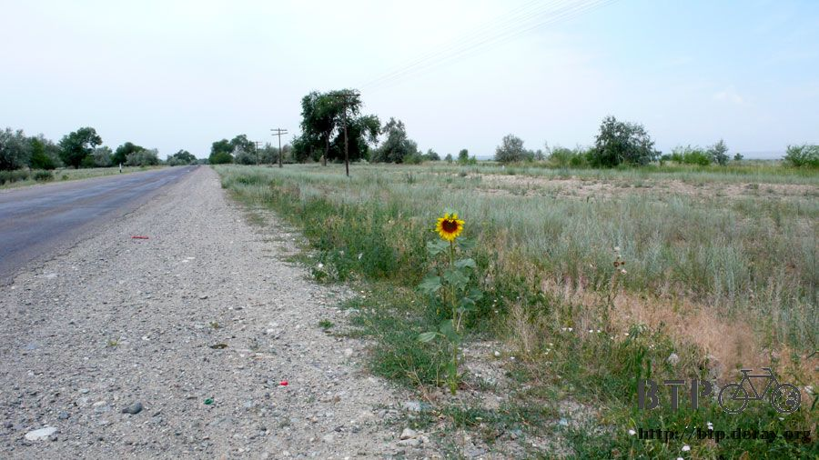
Compared to it back in China, the gas stations here suddenly become smaller.
As my best shelter in the tour, I will still rely on these gas stations all along the way.
It's okay to become smaller, as long as I can still hide in its shade.
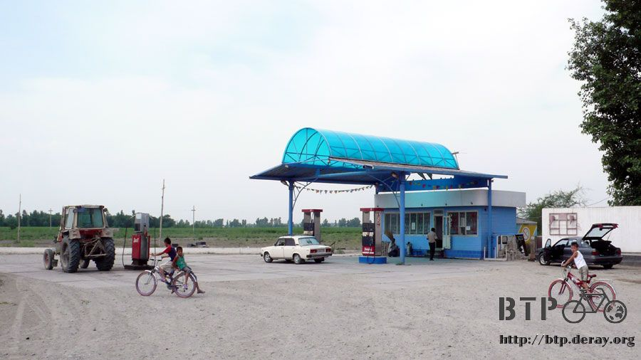
The condition of the road is not at all good.
One major reason why I do not need to replace the tire of Dido
after we been through the whole china is that most roads in china are finely built.
But in Kazakhstan, the road is build with stones and tar, which is rough and bumpy, and is very difficult to ride on.

This is the first road sign I saw in Kazakhstan. I am a bit freaked out that the sign comes with only Kazakh.
Some of them still come with Russian, but English never makes its way onto these signs.

After quite some time, I finally saw the first village from the border. PENZHIM is the name.

The exterior of the house here is different from what I see back in China.
Slanting roof, large yard, gives you a open feeling. A large portion of the house are made of wood.

Another major difference is the warm welcome from the people. Kazakhs are totally friendly, inviting and passionate.
The percentage of those who will say hi to me jumped from 3% in China to 90% in Kazakhstan.
It doesn’t matter how close they are or what they are doing at the time,
almost everyone on the road waves at me and says hi when I pass by.
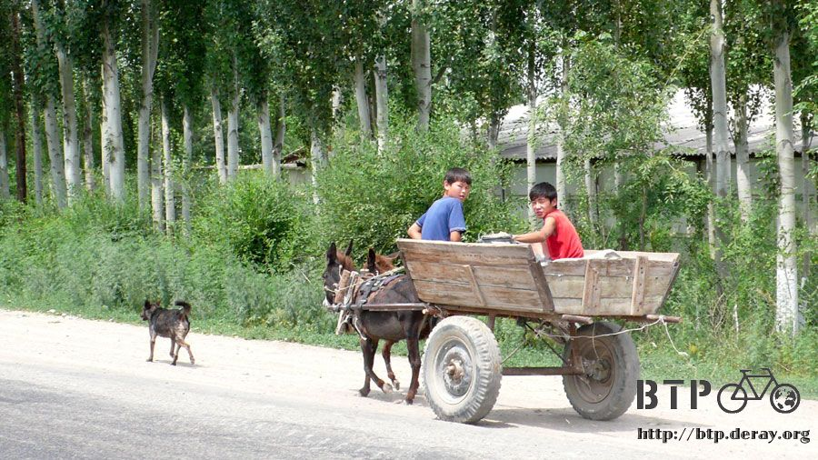
In the case I didn’t notice the waving, they will whistle to grab my attention, and then wave to me with smile.
If they are playing by the stream, they even invite me come down to swim.
Some nearly undressed guys who were hiding from the sun in the shadow of the tree also invites me to take a rest with him.
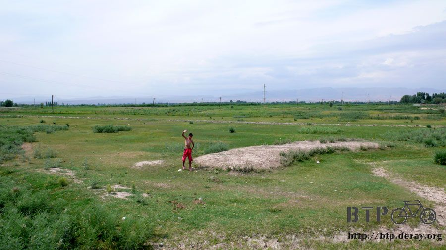
If I said "Jiakesma" (hello in Kazakh) to them, more than half of the time they will invite me to take a rest and talk with them.
But.. I don't understand them. With the silly smile on my face,
I can only point at the direction I am heading to confirm if I am heading Alma-ata or not.

It is kind of crazy to realize that there are so few road sign along the way, and no way to know the name of the road (or they are all unnamed).
Not even a sign to indicate the distance. Back in China, there is a distance sign every kilometer. In Kazakhstan, nothing.
With roads without name and distance sign, even if I happened to have a detailed map of Kazakhstan in hand,
I can hardly imagine how it can help me.

Although the condition of this road is not perfect, there are a lot of roadside trees. It is cozy to ride in the shadows.
The Kazakhs have good driving manners. No honking all the way, headlights on during the day, it is pretty safe to drive this way.
You can see the cute vintage sedans all around this place.
They normally comes with luggage on the top of the roof.
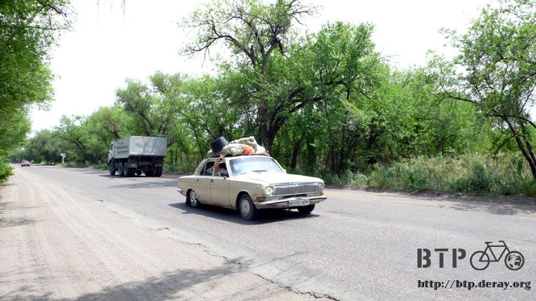
Most of the bus stations are very well decorated.
There are embossed graphics on the wall, colorful and interesting. All the graphics on the bus stops are different.

Sometimes you can see this by the road. The flower makes it looks like a headstone, but it is much less frightening.
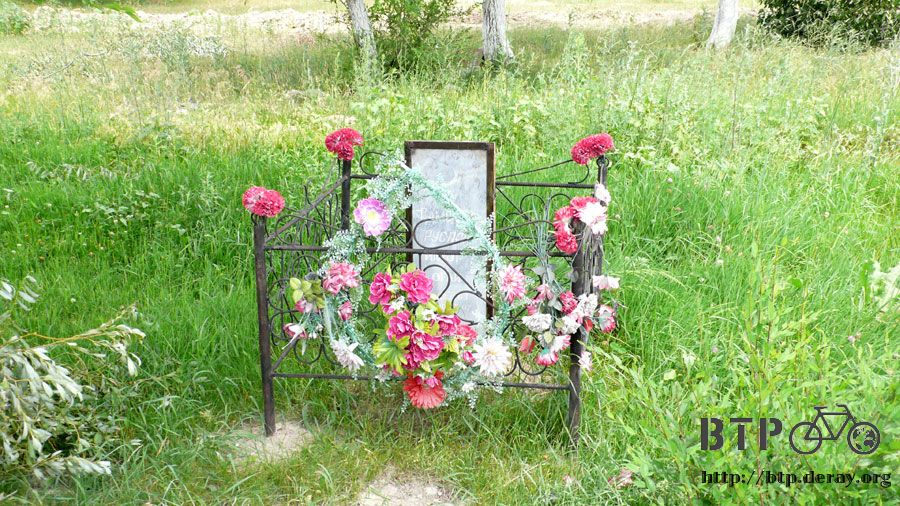
Time to time there are people selling apricot along the road.
If you do not want to pay for it you also have the option to take it from the trees yourself. The trees are full of apricot.

Selling apricot still seems normal to me.
Some kids will put a table by the road and put a water bottle and two bowls. Are they selling water?

Since I don’t read a word of Kazakh, there is no way to tell what the sign means.
However, I kind of get the feeling on which signs stand for coffee and store after some time.
In front of a place with white curtain and two kid drinking soft drink I stop my bike.
Although there is no sign, I got the feeling that this is a store. I am terribly hungry and thirsty now.

My instinct did not fail me. Despite the few goods to choose from, this is no doubt a store.
Since I don’t understand the price she said, I gave the shop lady 200 Tenge for a coke.

She gave me a some changes the size of NTD one dollar.
The copper colored one is 10 Tenge, and the silver colored one is 20 Tenge. This coke costs me 80 Tenge.
I sat down at the door and drank the coke. Except for the trademark, all the texts on the bottle are Kazakh.
The coke still tastes the same even though I don't understand what it says on the bottle.
Turn back into the store; I want a bag of cracker.
With the changes in my hand, I ask the shop lady take the money for the cracker.

My breakfast is a banana and juice flavored milk, lunch is coke and a bag of cracker.
If I am still hungry, I still have some crackers in my bag.
There are some stores that looks like coffee shop with light food, but I did not stop for it.
I merely guessing what the sign says and ride by.
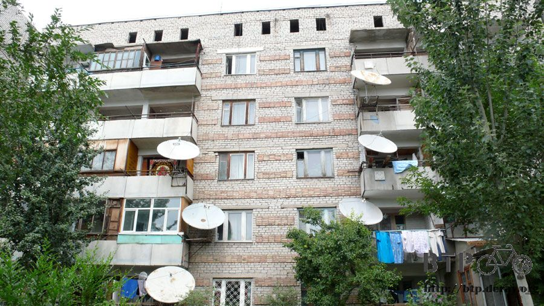
I do not know where to stay today. There are so few towns along the way, so whenever I saw a people around,
I take my notebook out and point to the word "Hotel" in Kazakh.
This is faster than trying to pronounce the word. Sadly, the answer is always no.
With no luck I decided to back to the road. I would rather enjoy in the hotel for the first day in this new country.

This looks like a mansion owned by a rich guy.

3 PM in the afternoon, I arrived at a larger town.
A few guys summon me when I was biking around the place looking for hotel.
They find out that I don’t speak Kazakh soon enough. With the notebook in hand,
I asked them if there are any hotels around this place. The answer is no.
The guy grabs a stick and draws the map on the ground. I need to leave this town and turn right,
keep going straight at the circle for quite some time before I can find a hotel.
Oh my freaking god. I am already totally exhausted.

Another guy find out that my water bottle is empty, and take me to the pump for refill.
This is just like a gift from the above. I filled my stomach with water and then the water bottles.
It is so easy to get thirsty in Kazakhstan, and I am sweating all the time.

The guy at the right leads me to the water; the guy on the left drew me the map.
The guy in the middle just comes for the photo shot.
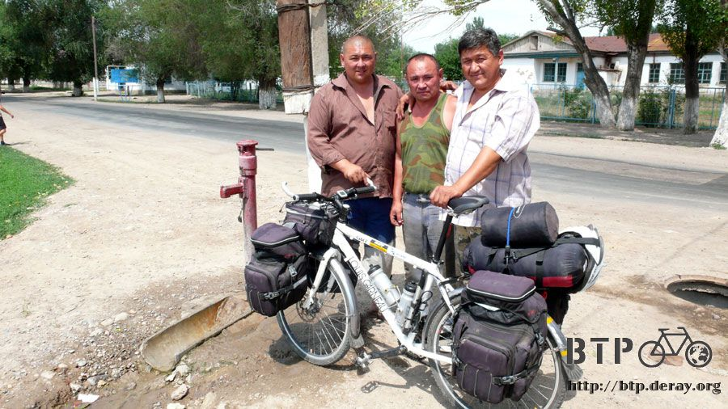
Following the guide, all I can see is desolate land. With 70 kilometer between town and town,
there is nothing in between. The Kazakhstan is really a large country.
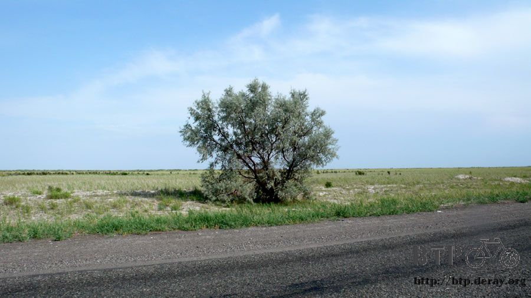
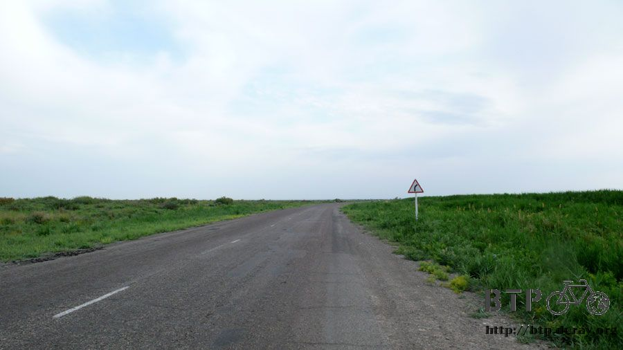

I soon feel a bit of tired on the first day biking here. Thinking of how long I have to pedal before I found a town with a hotel.
Will I need to camp in the wild at the very first day here?
The water bottle emptied very soon. I kept one last sip of water in the bottle in case I really need to camp outside.
At that time this sip of water will become the critical sip.
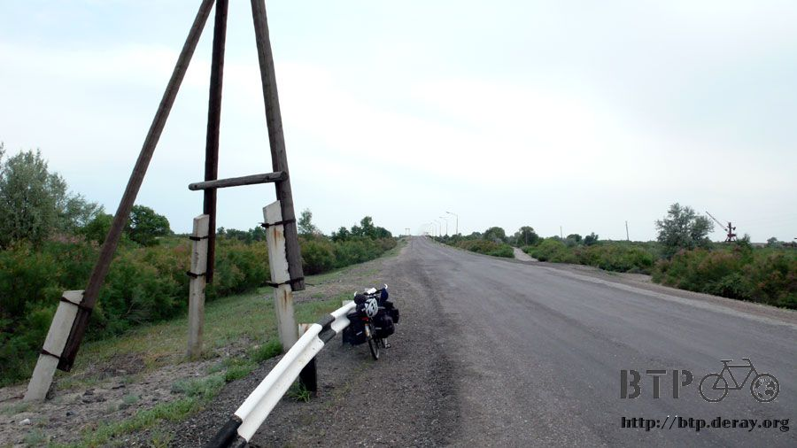
I crossed a river along the road. There are sandbars in the middle of the river.
After the such a long time of existence, it is covered with a forest.
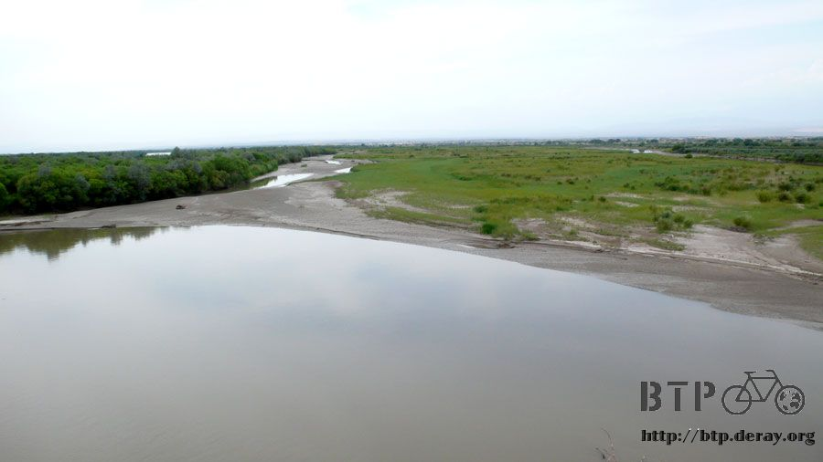

However, there are some strange machines hidden inside the forest. Not so pleasant to the eye.
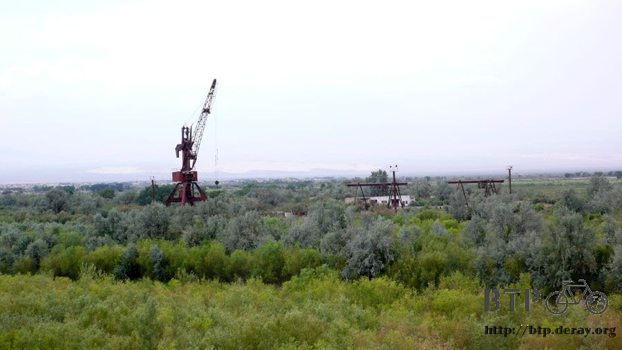
The sun starts to set at 8 PM. Since I already adds two hours to the clock, the sunset time back to normal again.
However, I still do not know how far the town is under the setting sun.
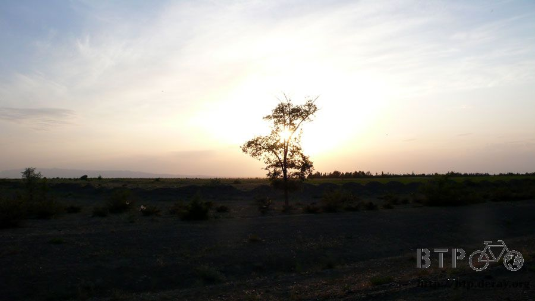
Now I have changed my target from hotel to good campgrounds.
When I look across the bush, I thought I saw a house.
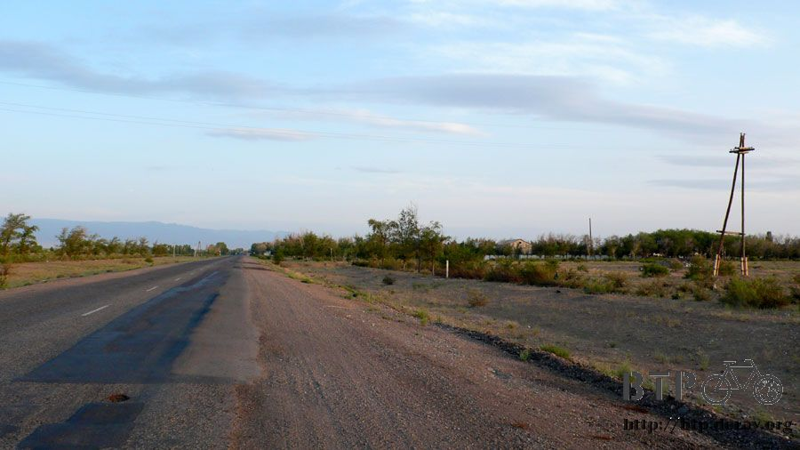
It turns out that it is really a house. This is a small village named Bahade.
Now that hotel is not my main concern. Store and restaurant is much more important to me now.
It got to be easier to find the two things than a hotel?
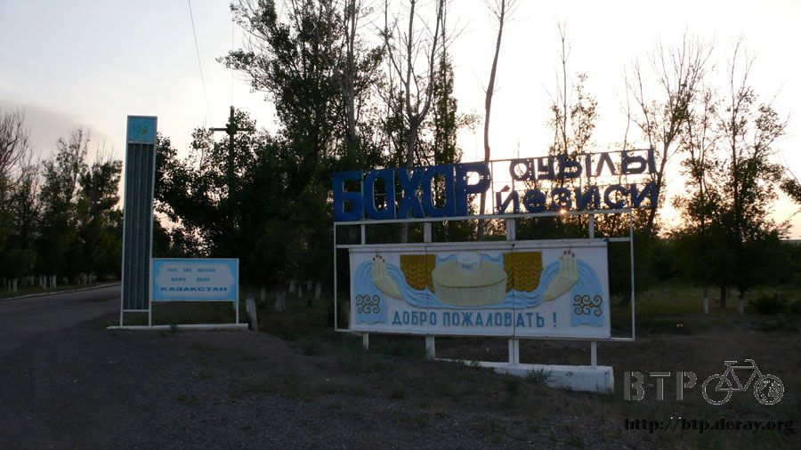
Bahade is not a large town. In fact, it is a small and vintage place.
I am not very certain that I can find a store or restaurant here.
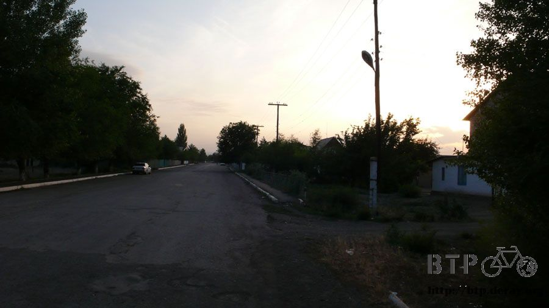

Now I am starting to get used to be "summoned" by the resident aside the road.
Normally they will not just stop after saying "hi", they except at least some conversation.
This time I don’t need the notebook.
I take out my water bottle, open it and turn it upside down. Not even a drop.
Then I start to act like I need water.
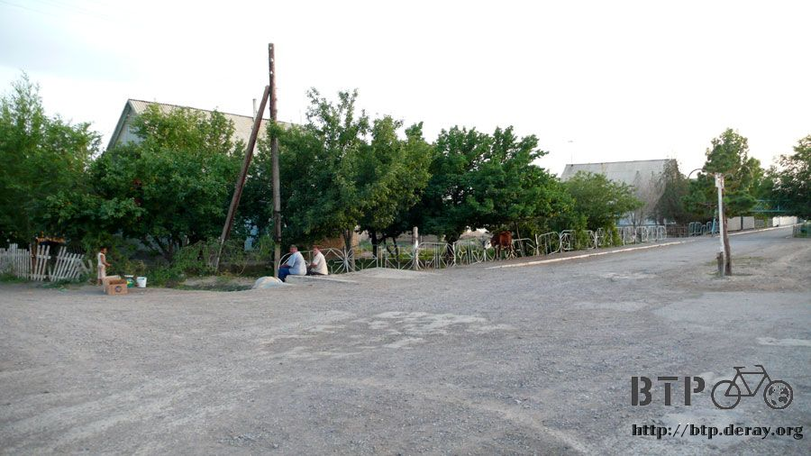
They now know the thing I am looking for is the store.
By following their direction, I arrive at a place with no sign. There is a young man standing by the door.
Talking about the store. Without their direction, I can never find it in this town.
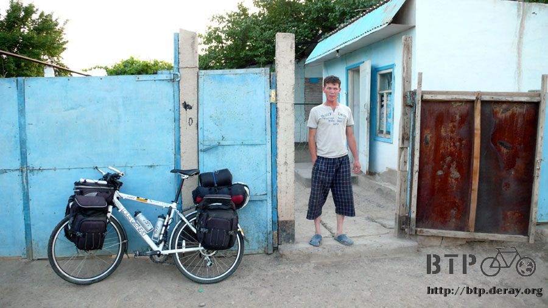
In to the store, drink is the first I want. I bought two iced large sprites at a time,
and finish one whole bottle before getting out of the door.
Seems like few people do it this way in here.
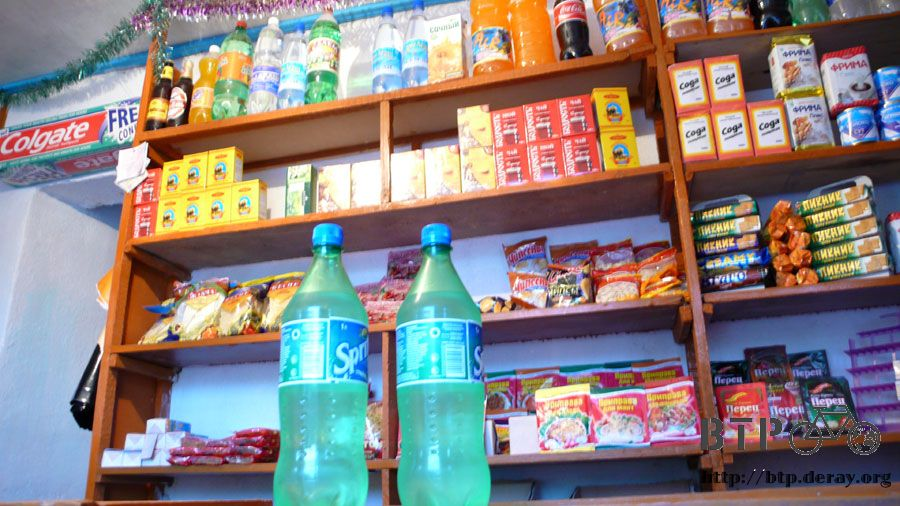
The mother of this house finished her walk with her beautiful daughter.
They saw me and Dido, and made a gesture like eating and sleeping and invite me in.
I was originally thinking of getting supply and go camping, but in the end I were treated for one night of stay in the house by the Kazakhs.
How lucky I am.
First thing first. I washed my face and find out that there are several bugs died on my face.
I almost freaked out seeing so many bugs and flies along the road.
I may need more practice with this water dispenser.
To get the water you don’t twist the rod under the water tank, instead you push it upwards.
I felt much relieved after I washed my face.
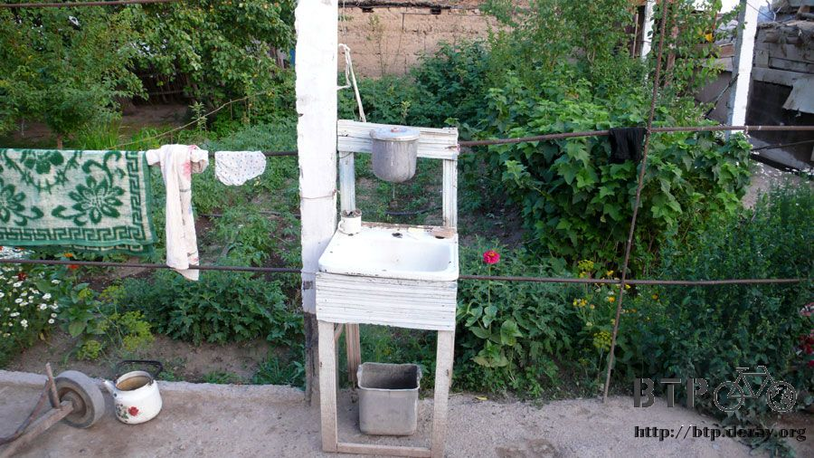
This is a large family with four kids. Two elder sons are already married, and already made some more grandchildren.
The only son that is still single is the one just standing by the door.

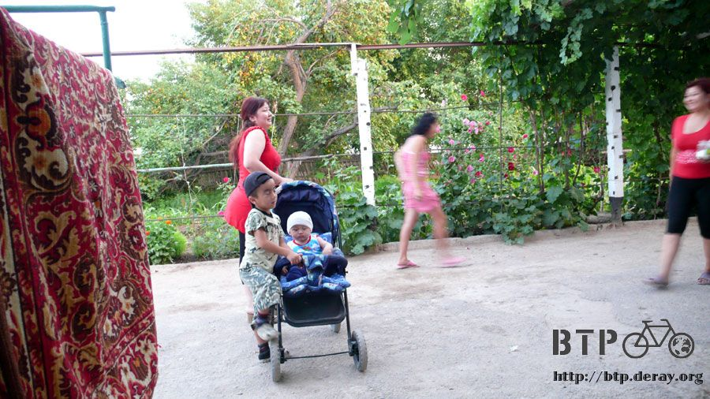
His name is "Falehahte" . He is a first sergeant, and speaks a bit of English. That is how we communicate.
When I was taking a rest under the roof, the mother of the family "Maya" is busy preparing my dinner.
Since everyone else already had their dinner, this one is exclusive for me.
The main course of the dinner is a kind of grain that I can not name. They call it "Gelijuga".
It goes well with the slight scent of the potatoes.
Side with a lot of freshly picked apricot, big cookie that is very hard to the teeth,
a whole plate of candy and cookies, black tea and cube, this is indeed a satisfying dinner.
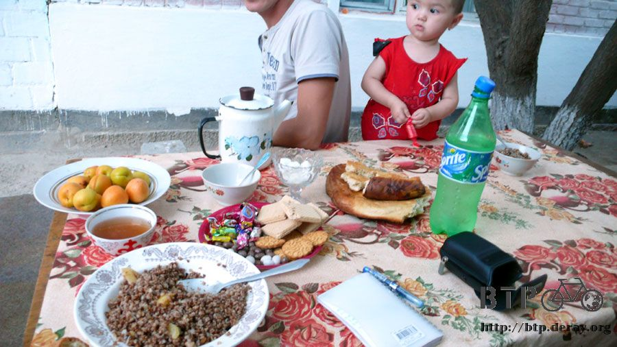
I start asking question while I am eating. I want to know the name of the other family member.
Falahate told me and I record it onto my notebook in Chinese.
I am quite stuffed after finish a pile of Gelijuga.
Falahate took me to the only coffee shop in town, which is considered the modern architecture here.
And I learned one more Kazakh here. Beer is called "Piwa" in Kazakh.
This is quite handy, since I might need one after a long day. Now that at least know how to ask for one.
I also learned the word that I have fingered on for the whole day. Hotel is pronounced "Gasinzha" in Kazakh.
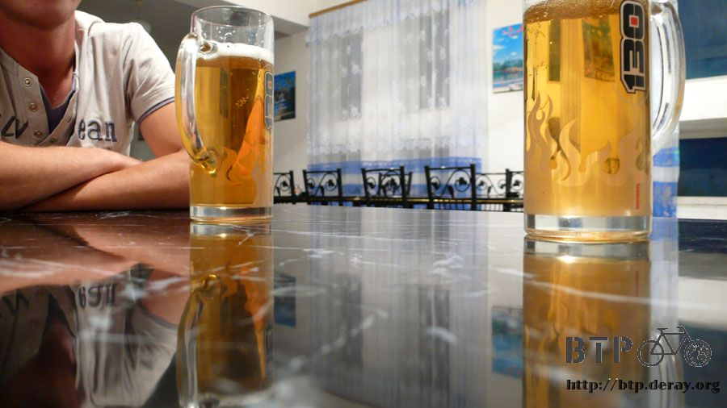
Falehate and I drank a whole glass of draft beer in this place.
The beer tastes very bitter and is totally not my cup of beer.
However I still said "Jahez!", which means great taste, to be polite.
Sitting in the coffee shop, I can no longer see the setting sun.
On my way back I was thinking whether I should sleep at the dinner place, or take my sleeping bag and sleep by the door.
Falahate took me into the house. The parents are watching TV, with their grandson in hand.
This is such a pretty and warm home. There are carpets hanging on the wall and lay on the ground.
Falahate take me to the second floor, which is quite a comfy room.
They even put up clean sheets and blanket cover for me. Tonight I have a roof above me.
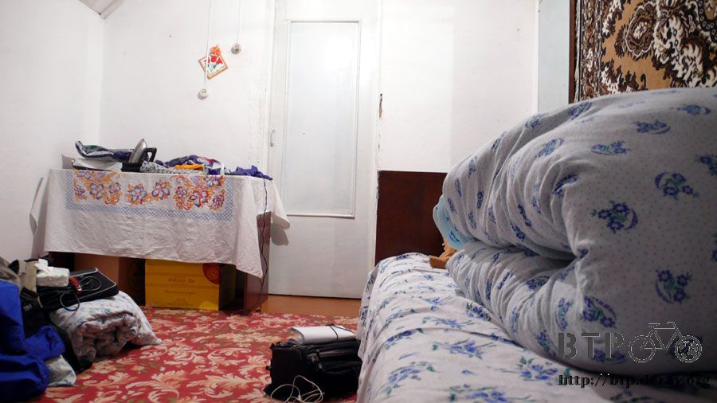
Since I am all sticky and sweaty, I asked this stupid question. "Do Kazakhs take showers each day?"
The answer is yes. After my room is ready, it's the happy shower time.
First heat some water in large pot, and put in cold water in smaller buckets.
It was like a I born again after I get out of the bathroom.
It is already dark outside now. I will leave these dirty close to tomorrow.
I have also checked the directions during dinner. I have 250 kilometers ahead before I arrive at Alma-ata.
I can find a place with hotel after about 150 kilometers. The plan is buy a map after I hit the major city, Alma-ata.
I also find out another interesting thing. If I did not turn in to Bahade from the main road,
after 3 kilometer I will arrive at another town, which is larger and comes with a hotel.
Falahate said this during the dinner.
"You can find a hotel ahead, but it costs money. Today you stay in our place, free. Stay."
Kazakhs are inviting, cute, friendly and passionate.
Despite the fact that their road sucks, their signs are a mess, I like Kazakhstan very much.
The first day in Kazakhstan ends peacefully. With all the fatigue I have with me,
I fall at sleep in spilt seconds after I get on the bed.
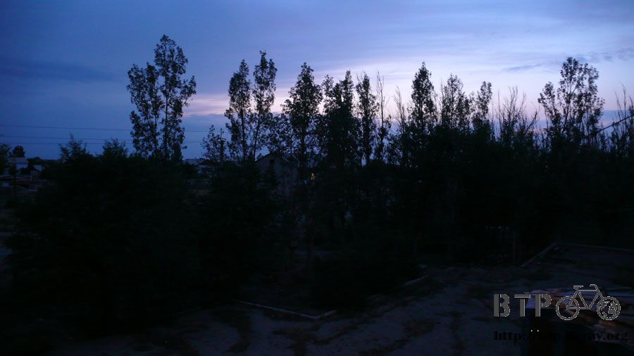